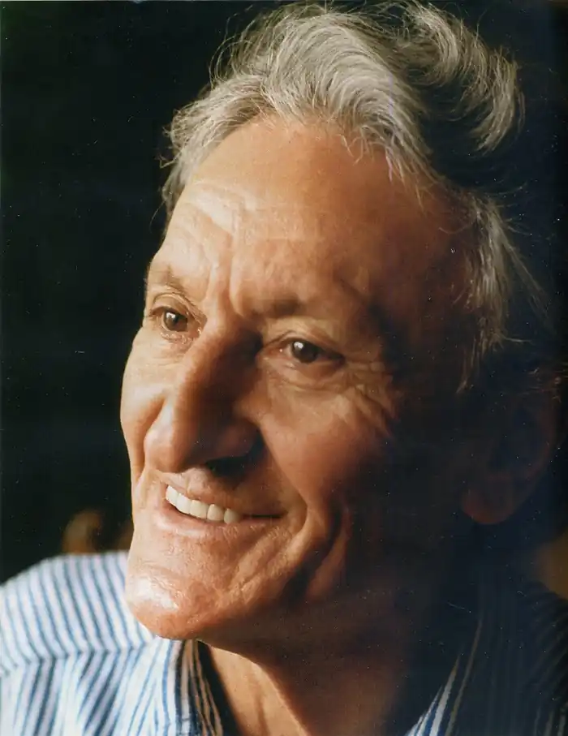
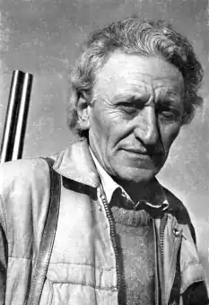

Народився 29 жовтня 1929 р в с.Каліманіца, область Монтана, Болгарія — помер 21 cічня 2004 р.
Йордан Радічков — видатний болгарський письменник, драматург і сценарист. Двічі він номінувався на Нобелівську премію, його твори видані на 37 мовах світу в більш ніж п'ятдесяти країнах. Він спілкувався з коронованими особами і Папою Римським Іоанном Павлом II. Його п'єси ставилися на кращих сценах, в тому числі у МХАТі ("Спроба польоту"). При цьому він говорив тільки на рідній мові і завжди пам'ятав про своє село Каліманіца.
Серед його творів є одне, яке називається "Порохової буквар". Таким букварем є вся творчість Йордана Радічкова. Його намагалися аналізувати, розбивати і кришити на дрібні частинки літературознавці і театрознавці Болгарії та Росії, Італії та Швеції, Франції та Німеччини, але воно не піддавалося аналізу. Він не мав предтечею, але мав сподвижників: серед них — Георгій Гачев, з яким Радічков в кінці 60-х подорожував по Сибіру, Ніка Глен і Світу Міхелевіч, які переводили його притчі на російську мову, Методи Андонов, який відкрив його для театру. На стінах його будинку в Софії — картини Злата Бояджиєва, дечко Узунова, Светліна Русева, стародавні ікони, а в глибині — велике вічнозелене дерево, як ніби виросло в лісі, а не в вітальні. Причетність до природи відділяла Радічкова від міських жителів, заважала їм бачити те, що було територією його уяви, філософських роздумів і захоплень. Хто тільки не бував в цьому будинку: письменник Еміліян Станев і кінорежисер Рангель Вилчанов, славісти Джузеппе Дель Агата і Данило Манера, театральні режисери Юлія Огнянова, Кіркор Азарян та Іван Добчев. Роберт Стуруа збирався поставити на сцені радічковскій "Январь". У Лос-Анджелесі джаз-піаніст і композитор Мілчо Льовієв відгукнувся з великою скорботою про смерть письменника, згадавши, як на початку 60-х їхні шляхи перетнулися під час зйомок художнього фільму за сценарієм Радічкова "Жаркий полудень". А письменник Антон Дончев, відзначаючи важку втрату, написав, що Радічков мав властивість проникати в ті спектри світла, які недоступні звичайному оку. Тексти Радічкова далеко не однозначні, і тому можна знаходити щоразу щось нове, перечитуючи "пращі", "перекинутися небо", "Люте настрій", "Спогади про коней" ... Впродовж останнього десятиріччя було для Радічкова десятиліттям мовчання. Навіть тоді, коли він бував у суспільстві людей і його про щось питали, письменник відповідав якийсь притчею або афоризмом. Одного разу він сказав: "Людина — це довге речення, написане з великою любов'ю і натхненням, але з багатьма помилками в правописі".